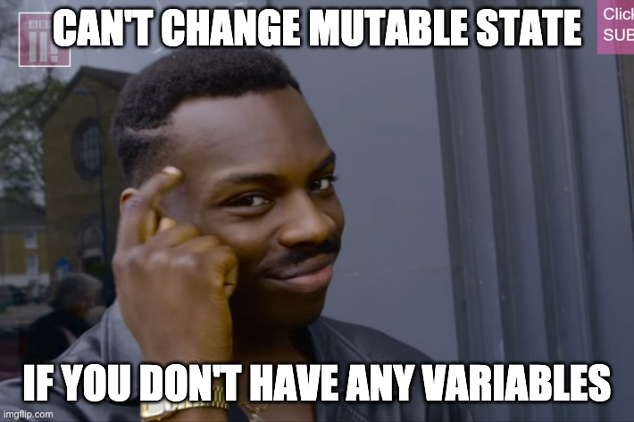

Professor Abdul-Quader
26 April 2021
3 types of technical interview questions:
Common asynchronous design pattern.
Alerting system.
Data structure?
Quick poll (participants):
Have you heard of “imperative” and/or “declarative” programming?

String list = "[1, 3, 5, 7, 9]";
int[] intList = Arrays.stream(list.split(",")).map(String::trim).mapToInt(Integer::valueOf).toArray();Yikes!
list.split(",")Arrays.stream(array).map(String::trim)map: apply a function to the elements of the stream// have a stream of Strings now
stream.mapToInt(Integer::valueOf)Array.stream(array).parallel().map(String::trim).mapToInt(Integer::valueOf).toArray();public enum Operator {
PLUS, MINUS, TIMES, DIVIDES;
}
Why?
public enum Operator {
PLUS(Integer::sum), MINUS((x, y) -> x - y),
TIMES(x, y) -> x * y), DIVIDES (x, y -> x / y);
private IntBinaryOperator operator;
Operator(IntBinaryOperator o) {
operator = o;
}
public int operate(int num1, int num2) {
return operator.applyAsInt(num1, num2);
}
}(x, y) -> x - y